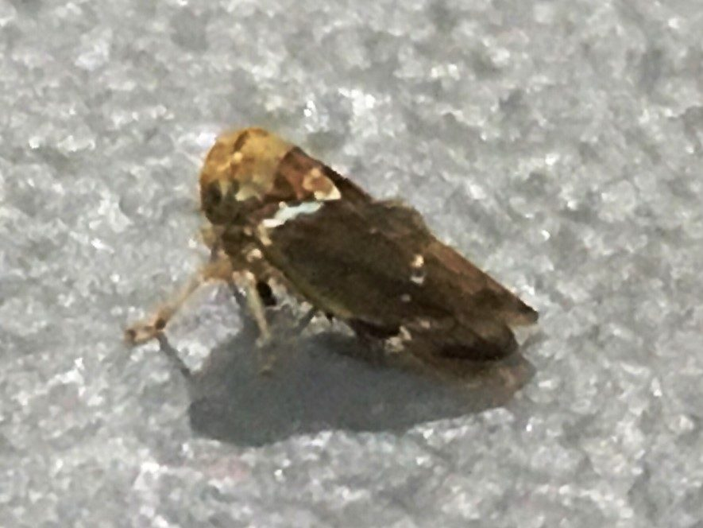

आम का भुनगाMango Leafhopper
Idioscopus nitidulus · Cicadellidae · INS-0167

- Scientific name वैज्ञानिक नाम
- Idioscopus nitidulus (Walker, 1851)
- Family कुल
- Cicadellidae
- Hindi हिंदी
- आम का भुनगा
- Local names स्थानीय नाम
- aam ka bhunga, aam ka bhungaa, mango hopper, mango leafhopper
- Status here यहाँ की स्थिति
- native
- Movement आवागमन
- Resident, here all year
- Known from कहाँ दर्ज
- Others have published records from the wider Awadh–Purvanchal plain, none yet from Basti–Ayodhya अवध–पूर्वांचल से दूसरों के प्रकाशित अभिलेख, बस्ती–अयोध्या से अभी नहीं
- IUCN IUCN
- not evaluated
- Review समीक्षा
- audited and independently read
When to look कब देखें
Present all year. साल भर मौजूद।
आम का भुनगा / Mango Leafhopper
Idioscopus nitidulus (Walker, 1851) — Cicadellidae
आम का भुनगा — आम के पत्तों पर पीले और लाल सिर वाले चमकीले फुदके। हज़ारों की संख्या में आ जाते हैं और पत्तों को धब्बेदार कर देते हैं। छोटे फलों को गिरा देते हैं।
Quick Identification त्वरित पहचान
| Feature | Description |
|---|---|
| Adult length | 2.5–3.5 mm |
| Head colour | Reddish or orange |
| Body colour | Yellow-brown to greenish |
| Wings | Clear or slightly yellow |
| Eyes | Large, reddish |
| Nymph | Pale greenish or yellowish |
| Damage | Leaf stippling, yellowing, premature drop |
| Honeydew | Sooty mould on fruit and leaves |
Field tip: Look for tiny insects with red heads on mango leaves, especially at the leaf undersurface. Damage appears as brown stippling on leaf surface. Colonies are often covered by sooty mould from their honeydew.
हिंदी — कैसे पहचानें: आम के पत्ते पर पीले-लाल सिर वाले छोटे कीड़े। पत्ता धब्बेदार हो जाता है।
Morphology आकारिकी
Biometrics:
| Measurement | Range |
|---|---|
| Adult length | 2.5–3.5 mm |
| Nymph length | 0.5–3 mm |
Adult: Small leafhopper with distinctive reddish or orange head and pronotum; body yellow-brown to greenish. Wings membranous, clear. Eyes large, reddish. Legs pale. Sexual dimorphism minimal.
Nymph: Pale greenish or yellowish; wingless; similar body form to adult.
हिंदी: छोटा, सिर और सीना लाल या नारंगी, पीठ पीली।
Behaviour & Ecology व्यवहार और पारिस्थितिकी
The Mango Leafhopper is the most important leafhopper pest of mango in India and South Asia. Both nymphs and adults aggregate on leaf blades and extract phloem sap continuously. This feeding causes stippled chlorosis, yellowing, and premature defoliation. The insect also secretes honeydew, which promotes sooty mould growth on leaves and fruit, further reducing photosynthesis and fruit quality. Large populations during fruit development can cause significant fruit drop and economic loss. The species is monophagous or highly specialized on mango; some reports of feeding on guava and other trees are likely erroneous or incidental.
हिंदी: आम के बाग़ों की सबसे बड़ी कीट समस्या। फूल आते समय यदि ये पल जाएँ तो सारा फल गिर सकता है।
Life Cycle / Phenology जीवन चक्र
| Stage | Duration | Notes |
|---|---|---|
| Egg | 10–12 days | Inserted into leaf veins |
| Nymph | 18–24 days | Five instars; gregarious |
| Adult | 20–30 days | Oviparous |
| Cycle | 40–55 days | Two to three generations per year |
हिंदी: अंडा 10–12 दिन, निम्फ़ 3 हफ़्ते, बड़े 3–4 हफ़्ते। साल में दो-तीन पीढ़ियाँ।
Host Plants or Prey आहार
Primary host:
- Mango (Mangifera indica)
Occasional secondary hosts:
- Guava (Psidium guajava)
- Cashew (Anacardium occidentale)
Essentially monophagous on mango; rarely found on other plants in significant numbers.
Predators / Natural Enemies शत्रु
- Parasitoid wasps: Anagrus spp. (natural parasites)
- Spiders: jumping spiders and hunters; good biocontrol agents
- Coccinellid beetles: occasional predators on nymphs
- Predatory bugs: occasional predation
- Entomopathogenic fungi: Beauveria and Metarhizium in wet conditions
Agricultural / Human Relevance कृषि प्रासंगिकता
The Mango Leafhopper is the most economically important leafhopper pest in mango orchards across India. Direct feeding damage (chlorosis, yellowing) and honeydew-induced sooty mould reduce fruit quality and marketability. During fruit development and flowering, large populations can cause 30–50% fruit drop, representing substantial economic loss. Management involves chemical insecticides (increasingly restricted due to resistance and environmental concern), insecticidal soaps, and biological control using natural enemies.
Traditional management: Pruning of heavily infested branches, removal of infested leaves, and maintenance of predatory spider and wasp populations through reduced pesticide use.
Expected Locally स्थानीय रूप से अपेक्षित
Not a field record. Written from published accounts for eastern Uttar Pradesh. No confirmed local sighting yet — if you have seen it, that is what the atlas needs.
अभी तक स्थानीय पुष्टि नहीं। यह विवरण प्रकाशित स्रोतों से है, किसी अवलोकन से नहीं।
Expected on mango trees throughout Basti and Ayodhya districts, year-round. Populations peak during monsoon months and flowering/fruit-set periods. A photograph with date and location would confirm local presence.
Distribution वितरण
Global range: South and Southeast Asia, particularly India where it is endemic on mango.
In India: Throughout India in mango-growing regions.
In Uttar Pradesh: Common in mango-growing districts.
In Basti district / eastern UP: Expected on mango trees wherever grown; common year-round.
Research Questions शोध प्रश्न
Anyone can investigate these | कोई भी इन प्रश्नों की जाँच कर सकता है
- What is the seasonal population dynamics on mango trees in your area? / आपके आम के बाग़ में यह भुनगा किस महीने में सब से ज़्यादा होता है? — Sample leaves monthly; count populations.
- Does flowering stage affect population growth and fruit drop? — Compare populations before, during, and after flowering.
- Which spider species are most important predators? — Observe and photograph predation events; identify spiders.
- Can removal of heavily infested leaves reduce overall populations and improve fruit set? — Prune infested branches; monitor fruit drop.
- How does sooty mould affect fruit quality and marketability? — Compare fruit from infested versus clean trees.
Similar Species मिलती-जुलती प्रजातियाँ
| Species | How to tell apart | हिंदी |
|---|---|---|
| Other Idioscopus species | Similar but host-specific and with subtle colour differences | अन्य जाति, अलग पौधे |
| Other small red-headed leafhoppers | Variable; but I. nitidulus on mango is highly diagnostic | अलग भुनगे |
Field rule: Tiny leafhopper with reddish-orange head on mango leaf undersurface, causing stippled chlorosis and honeydew sooty mould: Mango Leafhopper (Idioscopus nitidulus).
Taxonomy & Classification वर्गीकरण
Original description. Described by Walker in 1851 in List of the Homopterous Insects in the Collections of the British Museum, part III, as Tettigonia nitidula based on specimens from the Indian subcontinent. Transferred to Idioscopus by later revisers.
Subspecies. Monotypic — no subspecies are formally recognised.
Family and order placement. Order Hemiptera, family Cicadellidae.
Phylogenetic notes. Idioscopus is a monophagous genus of leafhoppers specialised on various Mangifera and related trees.
IUCN status rationale. Not evaluated. As a widespread, economically important species, no conservation assessment is warranted.
Photo Gallery फोटो गैलरी
Photos needed आवश्यक फोटो
- [ ] Adult leafhoppers on mango leaf (पत्ते पर भुनगे)
- [ ] Damaged leaf with chlorosis (खराब पत्ता)
- [ ] Sooty mould on fruit (काली फफूँदी)
No photos yet — add field photos to media/species/mango_leafhopper/ and run node scripts/sync_photos.js.
References संदर्भ
- Walker, F. (1851). List of the Homopterous Insects in the Collections of the British Museum, part III. London. [original description]
- Subramaniam, T.R. (1999). The mango leafhopper Idioscopus species and their management. Advances in Horticulture 5: 1845–1887.
- Srinivasan, G. (2008). Insect pests of mango and their management. Indian Horticulture 53(5): 12–18.
- Haq, Z. & Mani, M. (1998). Biological control of mango pests in India. Acta Horticulturae 455: 437–444.
- ICAR (2018). Handbook of Agricultural Pests in Uttar Pradesh. Directorate of Extension, NDUAT.
- GBIF Occurrence Data — Idioscopus nitidulus, India (2023).
Source file: species/fauna/insects/mango_leafhopper.md